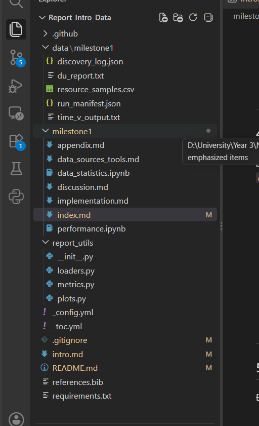

Hướng Dẫn Nội Dung Từng Tệp — Cây Cấu Trúc Report Milestone 1#

Tổng quan cây cấu trúc#
Report_Intro_Data/
├── .github/ # CI/CD deploy Jupyter Book lên GitHub Pages
├── data/milestone1/ # Dữ liệu thô phục vụ sinh bảng/biểu tự động
│ ├── discovery_log.json
│ ├── du_report.txt
│ ├── resource_samples.csv
│ ├── run_manifest.json
│ └── time_v_output.txt
├── milestone1/ # Nội dung chính của report
│ ├── index.md
│ ├── data_sources_tools.md
│ ├── implementation.md
│ ├── data_statistics.ipynb
│ ├── performance.ipynb
│ ├── discussion.md
│ ├── appendix.md
│ └── report_utils/ # Module Python hỗ trợ sinh biểu đồ/thống kê
│ ├── __init__.py
│ ├── loaders.py
│ ├── metrics.py
│ └── plots.py
├── _config.yml
├── _toc.yml
├── .gitignore
├── intro.md
├── README.md
├── references.bib
└── requirements.txt
1. Các file cấu hình gốc#
_config.yml#
Cấu hình chính của Jupyter Book.
title: "Intro to Data Science — Project Report"
author: "Nhóm XX"
logo: "" # đường dẫn logo nếu có
execute:
execute_notebooks: auto # Tự động chạy notebook khi build
timeout: 600 # Timeout cho mỗi cell (giây)
allow_errors: false
parse:
myst_enable_extensions:
- colon_fence
- dollarmath
- linkify
- substitution
bibtex_bibfiles:
- references.bib # File BibTeX cho trích dẫn
repository:
url: https://github.com/<user>/<repo>
branch: main
html:
use_issues_button: true
use_repository_button: true
sphinx:
extra_extensions:
- sphinx_proof # Nếu cần
_toc.yml#
Mục lục — quyết định thứ tự và cấu trúc các trang trong book.
format: jb-book
root: intro
parts:
- caption: "Milestone 1 — Data Crawling"
chapters:
- file: milestone1/index
- file: milestone1/data_sources_tools
- file: milestone1/implementation
- file: milestone1/data_statistics
- file: milestone1/performance
- file: milestone1/discussion
- file: milestone1/appendix
.gitignore#
_build/
__pycache__/
*.pyc
.ipynb_checkpoints/
.DS_Store
requirements.txt#
Các package cần cài để build Jupyter Book và chạy notebook.
jupyter-book>=1.0
matplotlib
pandas
numpy
seaborn
psutil
tabulate
references.bib#
File BibTeX chứa tất cả trích dẫn dùng trong report.
@misc{arxiv_api,
title = {arXiv API User's Manual},
url = {https://info.arxiv.org/help/api/user-manual.html},
year = {2024}
}
@misc{arxiv_py,
author = {Lukas Schwab},
title = {arxiv.py — Python wrapper for the arXiv API},
url = {https://github.com/lukasschwab/arxiv.py},
year = {2026}
}
@misc{semantic_scholar_api,
title = {Semantic Scholar Academic Graph API},
url = {https://api.semanticscholar.org/api-docs/},
year = {2024}
}
% Thêm các nguồn khác: OAI-PMH, Sickle, Kaggle dataset, S3 bulk access...
README.md#
Hướng dẫn setup và chạy (không phải nội dung report).
# Intro to Data Science — Project Report
## Thành viên nhóm
| MSSV | Họ tên | Vai trò |
## Cài đặt môi trường
- Python version yêu cầu
- `pip install -r requirements.txt`
## Build Jupyter Book
- `jupyter-book build .`
- Mở `_build/html/index.html` để xem local
## Deploy
- Push lên branch `main` → GitHub Actions tự deploy lên GitHub Pages
## Liên kết
- Source code repo: [link]
- Report (GitHub Pages): [link]
intro.md#
Trang chủ của toàn bộ Jupyter Book (root trong _toc.yml).
# Báo Cáo Project — Nhập Môn Khoa Học Dữ Liệu
Giới thiệu tổng quan:
- Mô tả project: crawling, parsing, machine learning trên arXiv
- Thông tin nhóm (tên, MSSV, phân công)
- Tóm tắt ngắn gọn nội dung từng milestone
- Liên kết đến source code repository
2. Thư mục data/milestone1/ — Dữ liệu thô#
[!IMPORTANT] Các file trong thư mục này là nguồn dữ liệu để notebook đọc vào và sinh bảng/biểu đồ tự động khi build. Không paste screenshot!
discovery_log.json#
Log quá trình entry discovery — dùng trong data_statistics.ipynb.
[
{
"arxiv_id": "2310.12345",
"title": "...",
"authors": ["Author A", "Author B"],
"num_versions": 3,
"categories": ["cs.AI", "cs.CL"],
"submission_date": "2023-10-18",
"discovery_method": "arxiv_api",
"discovery_time_sec": 1.23,
"status": "success"
},
{
"arxiv_id": "2310.12346",
"...": "..."
}
]
Nội dung: Mỗi entry gồm arXiv ID, metadata cơ bản, số version phát hiện, phương pháp discovery, thời gian xử lý, trạng thái (success/fail/pdf_only).
run_manifest.json#
Log quá trình download + extract từng version — dùng trong cả data_statistics.ipynb và performance.ipynb.
[
{
"arxiv_id": "2310.12345",
"version": "v1",
"download_status": "success",
"source_type": "tar.gz",
"raw_size_bytes": 524288,
"extracted_size_bytes": 102400,
"num_tex_files": 3,
"num_bib_files": 1,
"download_time_sec": 2.15,
"extract_time_sec": 0.08,
"num_references_crawled": 42,
"num_references_with_arxiv_id": 28,
"ref_crawl_time_sec": 3.5
}
]
Nội dung: Mỗi entry = 1 version của 1 bài, ghi nhận trạng thái download, loại source, kích thước trước/sau loại hình ảnh, số file .tex/.bib, thời gian, thông tin reference crawl.
resource_samples.csv#
Dữ liệu lấy mẫu RAM/CPU định kỳ trong quá trình chạy — dùng trong performance.ipynb.
timestamp,elapsed_sec,rss_mb,vms_mb,cpu_percent,phase
2026-10-27T10:00:00,0.0,120.5,450.2,12.3,discovery
2026-10-27T10:00:05,5.0,125.3,455.1,15.1,discovery
2026-10-27T10:01:00,60.0,210.8,520.4,45.2,download
2026-10-27T10:02:00,120.0,180.2,490.3,30.5,ref_crawl
Nội dung: Mẫu RAM (RSS, VMS), CPU qua từng mốc thời gian, gắn nhãn phase (discovery / download / ref_crawl) để vẽ biểu đồ memory footprint theo thời gian.
du_report.txt#
Kết quả disk usage — dùng trong performance.ipynb.
# du -sh output hoặc tương đương
total_raw_download_bytes: 1073741824
total_after_extract_bytes: 209715200
total_final_corpus_bytes: 209715200
num_papers: 500
num_versions_total: 1250
Nội dung: Tổng dung lượng thô trước khi loại hình, dung lượng sau extract chỉ .tex/.bib, dung lượng corpus cuối cùng.
time_v_output.txt#
Output từ công cụ đo performance (ví dụ /usr/bin/time -v trên Linux/Colab) — dùng trong performance.ipynb.
Command being timed: "python src/main.py"
Elapsed (wall clock) time: 2:35:12
Maximum resident set size (kbytes): 524288
Average resident set size (kbytes): 0
Minor (reclaiming a frame) page faults: 131072
Voluntary context switches: 45678
Nội dung: Wall time tổng, peak RSS, page faults — phục vụ đo hiệu năng tổng thể trên Colab.
3. Thư mục milestone1/ — Nội dung Report#
index.md#
Trang mở đầu của phần Milestone 1.
# Milestone 1 — Data Crawling
## Tổng quan
- Mục tiêu: thu thập mã nguồn LaTeX từ arXiv
- Dải ID được giao: XXXX–YYYY
- Tóm tắt kết quả: X/Y bài thành công, Z versions, ...
## Mục lục phần này
- Nguồn dữ liệu & công cụ
- Triển khai chi tiết
- Thống kê dữ liệu
- Hiệu năng scraper
- Thảo luận & kết luận
data_sources_tools.md#
Nguồn dữ liệu và công cụ — phần lý thuyết/mô tả.
# Nguồn Dữ Liệu & Công Cụ
## 1. Entry Discovery
- arXiv API: mô tả endpoint, tham số, cách dùng `arxiv.py` v4.x
- OAI-PMH: endpoint mới, verb, `Sickle`
- Kaggle Dataset: cấu trúc JSON lines, cách dùng `pandas`
- Bảng so sánh 3 phương pháp
## 2. Full-Text Source Download
- Endpoint `export.arxiv.org/src/{id}`
- Download bằng `urllib` / `requests`
- Giải nén bằng `tarfile`, chỉ extract `.tex` + `.bib`
- Xử lý edge cases: PDF-only, file đơn lẻ (không phải tar)
## 3. Reference Extraction
- Semantic Scholar API: endpoint, fields, response format
- Trích xuất arXiv ID từ `externalIds`
- Rate limiting & retry strategy
## 4. Bảng tổng hợp thư viện
| Thư viện | Version | Mục đích |
implementation.md#
Chi tiết triển khai — mô tả kiến trúc code và luồng xử lý.
# Triển Khai Chi Tiết
## 1. Kiến trúc tổng thể
- Sơ đồ pipeline (Mermaid flowchart)
- Mô tả từng module/script trong `src/`
## 2. Luồng xử lý chính
### 2.1. Entry Discovery
- Input: dải arXiv ID
- Gọi arXiv API → lấy metadata + số version
- Output: `discovery_log.json`
### 2.2. Source Download & Extract
- Lặp qua từng paper × từng version
- Download từ `export.arxiv.org/src/{id}v{n}`
- Extract chỉ `.tex`, `.bib` từ archive
- Xử lý các loại source: tar.gz, gz (file đơn), PDF-only
- Rate limiting: sleep ≥ 3s giữa các request
### 2.3. Reference Crawling
- Gọi Semantic Scholar API cho từng paper
- Parse response, trích arXiv ID
- Retry logic khi gặp 429
## 3. Xử lý lỗi & edge cases
- Paper bị withdraw
- Source là PDF-only → record rỗng
- ID cũ trước 2007 (dạng archive/YYMMNNN)
- Timeout, connection error → retry
## 4. Tổ chức dữ liệu đầu ra
- Cấu trúc thư mục corpus
- Schema bảng `papers` và `references`
data_statistics.ipynb#
Notebook thống kê dữ liệu — code cells sinh bảng/biểu đồ tự động.
# Cell 1: Import và load data
import sys; sys.path.insert(0, "..")
from report_utils.loaders import load_discovery_log, load_run_manifest
from report_utils.metrics import compute_stats
from report_utils.plots import plot_category_dist, plot_versions_hist
discovery = load_discovery_log("../data/milestone1/discovery_log.json")
manifest = load_run_manifest("../data/milestone1/run_manifest.json")
# Cell 2: Thống kê tổng quan
# - Tổng số bài được giao vs crawl thành công
# - Tỷ lệ thành công (%)
# - Tổng số versions crawled
# - Số bài PDF-only / fail
# → Xuất bảng bằng pandas DataFrame + tabulate
# Cell 3: Phân bố số version mỗi bài
# → Histogram: trục X = số versions, trục Y = số bài
# Cell 4: Phân bố theo category (cs.AI, cs.CL, ...)
# → Bar chart hoặc pie chart
# Cell 5: Kích thước bài trước vs sau loại hình ảnh
# → Box plot hoặc bar chart so sánh raw_size vs extracted_size
# Cell 6: Thống kê references
# - Tổng số references crawled
# - Trung bình references/bài
# - % references có arXiv ID
# - Phân bố số references/bài → histogram
# Cell 7: Tỷ lệ thành công crawl reference metadata
# → Bar chart: success vs partial vs fail
[!TIP] Markdown cells trong notebook dùng để giải thích ý nghĩa từng biểu đồ/bảng. Giữ ngắn gọn, phân tích sâu để ở
discussion.md.
performance.ipynb#
Notebook đo hiệu năng — sinh biểu đồ running time & memory footprint.
# Cell 1: Import và load
from report_utils.loaders import load_resource_samples, load_du_report, load_time_v
from report_utils.plots import plot_memory_timeline, plot_time_breakdown
samples = load_resource_samples("../data/milestone1/resource_samples.csv")
du = load_du_report("../data/milestone1/du_report.txt")
time_v = load_time_v("../data/milestone1/time_v_output.txt")
# Cell 2: Running Time
# - Tổng wall time end-to-end
# - Thời gian trung bình xử lý 1 bài
# - Breakdown theo phase: discovery / download / ref_crawl
# → Stacked bar chart hoặc pie chart
# Cell 3: Phân bố thời gian xử lý mỗi bài
# → Histogram hoặc box plot
# Cell 4: Memory Footprint — Timeline
# → Line chart: RSS (MB) theo thời gian, gắn nhãn phase
# → Đánh dấu peak RAM
# Cell 5: Tổng hợp Memory
# - Peak RAM (từ time -v hoặc psutil)
# - Average RAM (từ sampling)
# → Bảng tổng hợp
# Cell 6: Disk Usage
# - Tổng download thô
# - Sau extract (chỉ .tex + .bib)
# - Corpus cuối cùng
# → Bar chart so sánh
# Cell 7: Bảng tổng hợp hiệu năng
# | Metric | Value |
# |----------------------|----------------|
# | Total wall time | HH:MM:SS |
# | Avg time/paper | X.XX sec |
# | Peak RAM | XXX MB |
# | Avg RAM | XXX MB |
# | Final corpus size | XXX MB |
discussion.md#
Thảo luận và kết luận.
# Thảo Luận & Kết Luận
## 1. Đánh giá kết quả
- Tỷ lệ crawl đạt được so với mục tiêu
- Chất lượng dữ liệu: tính đầy đủ, tính nhất quán
## 2. Khó khăn gặp phải
- Các edge cases: PDF-only, withdraw, timeout
- Rate limiting và cách xử lý
- Vấn đề với arxiv.py version compatibility
## 3. Bài học kinh nghiệm
- Kỹ thuật xử lý rate limit hiệu quả
- Tầm quan trọng của error handling & retry
- Cách tổ chức dữ liệu cho pipeline downstream
## 4. Hạn chế
- Những gì chưa xử lý được
- Dữ liệu thiếu / không đầy đủ
## 5. Hướng cải thiện
- Tối ưu tốc độ crawl
- Xử lý thêm edge cases
- Chuẩn bị cho Milestone 2 (parsing)
appendix.md#
Phụ lục — thông tin bổ sung.
# Phụ Lục
## A. Bảng phân công công việc
| Thành viên | Nhiệm vụ | Ghi chú |
## B. Danh sách arXiv ID được giao
- Dải ID: từ ... đến ...
- Tổng số: N bài
## C. Danh sách bài PDF-only / không crawl được
| arXiv ID | Lý do | Ghi chú |
## D. Cấu hình môi trường chạy
- Google Colab CPU-only
- Python version, RAM, Disk
## E. Link tham khảo
- arXiv API docs
- Semantic Scholar API docs
- arxiv.py GitHub
4. Thư mục report_utils/ — Module hỗ trợ#
[!IMPORTANT] Module này chứa các hàm Python được notebook import để load dữ liệu, tính toán, và vẽ biểu đồ. Tách riêng để code trong notebook gọn gàng và tái sử dụng được.
__init__.py#
# Đánh dấu report_utils là Python package
# Có thể import convenience functions nếu cần
loaders.py#
Hàm đọc và parse các file data.
"""Loader functions for milestone1 data files."""
import json
import pandas as pd
def load_discovery_log(path: str) -> pd.DataFrame:
"""Load discovery_log.json → DataFrame."""
with open(path) as f:
data = json.load(f)
return pd.DataFrame(data)
def load_run_manifest(path: str) -> pd.DataFrame:
"""Load run_manifest.json → DataFrame."""
with open(path) as f:
data = json.load(f)
return pd.DataFrame(data)
def load_resource_samples(path: str) -> pd.DataFrame:
"""Load resource_samples.csv → DataFrame với timestamp parsed."""
df = pd.read_csv(path, parse_dates=["timestamp"])
return df
def load_du_report(path: str) -> dict:
"""Parse du_report.txt → dict of key-value pairs."""
result = {}
with open(path) as f:
for line in f:
if ":" in line and not line.startswith("#"):
key, val = line.strip().split(":", 1)
result[key.strip()] = val.strip()
return result
def load_time_v(path: str) -> dict:
"""Parse time -v output → dict."""
result = {}
with open(path) as f:
for line in f:
if ":" in line:
key, val = line.strip().rsplit(":", 1)
result[key.strip()] = val.strip()
return result
metrics.py#
Hàm tính toán thống kê.
"""Metric computation functions."""
import pandas as pd
def compute_crawl_summary(discovery: pd.DataFrame) -> dict:
"""Tính tỷ lệ thành công, số fail, PDF-only, ..."""
total = len(discovery)
success = (discovery["status"] == "success").sum()
return {
"total_assigned": total,
"total_success": success,
"success_rate": success / total * 100,
"pdf_only": (discovery["status"] == "pdf_only").sum(),
"failed": (discovery["status"] == "fail").sum(),
}
def compute_size_stats(manifest: pd.DataFrame) -> dict:
"""Tính avg size trước/sau extract, ..."""
return {
"avg_raw_size": manifest["raw_size_bytes"].mean(),
"avg_extracted_size": manifest["extracted_size_bytes"].mean(),
"size_reduction_pct": ...,
}
def compute_reference_stats(manifest: pd.DataFrame) -> dict:
"""Tính avg references/bài, % có arXiv ID, ..."""
return {
"avg_refs_per_paper": manifest["num_references_crawled"].mean(),
"avg_refs_with_arxiv": manifest["num_references_with_arxiv_id"].mean(),
"ref_arxiv_coverage": ...,
}
def compute_time_stats(manifest: pd.DataFrame) -> dict:
"""Tính tổng/trung bình thời gian theo phase."""
return {
"total_download_time": manifest["download_time_sec"].sum(),
"avg_download_time": manifest["download_time_sec"].mean(),
"total_ref_crawl_time": manifest["ref_crawl_time_sec"].sum(),
...
}
plots.py#
Hàm vẽ biểu đồ dùng matplotlib / seaborn.
"""Plotting functions for milestone1 report."""
import matplotlib.pyplot as plt
import seaborn as sns
import pandas as pd
def plot_versions_histogram(discovery: pd.DataFrame):
"""Histogram phân bố số version mỗi bài."""
fig, ax = plt.subplots(figsize=(8, 4))
ax.hist(discovery["num_versions"], bins=range(1, discovery["num_versions"].max()+2),
edgecolor="black", alpha=0.7)
ax.set_xlabel("Số versions")
ax.set_ylabel("Số bài báo")
ax.set_title("Phân bố số version mỗi bài")
plt.tight_layout()
return fig
def plot_size_comparison(manifest: pd.DataFrame):
"""Box plot so sánh kích thước trước/sau extract."""
...
def plot_references_distribution(manifest: pd.DataFrame):
"""Histogram số references mỗi bài."""
...
def plot_memory_timeline(samples: pd.DataFrame):
"""Line chart RSS theo thời gian, đánh dấu peak."""
fig, ax = plt.subplots(figsize=(10, 4))
ax.plot(samples["elapsed_sec"], samples["rss_mb"], label="RSS (MB)")
peak_idx = samples["rss_mb"].idxmax()
ax.annotate(f"Peak: {samples.loc[peak_idx, 'rss_mb']:.1f} MB",
xy=(samples.loc[peak_idx, "elapsed_sec"], samples.loc[peak_idx, "rss_mb"]),
fontsize=10, color="red")
ax.set_xlabel("Thời gian (giây)")
ax.set_ylabel("RAM (MB)")
ax.set_title("Memory Footprint theo thời gian")
ax.legend()
plt.tight_layout()
return fig
def plot_time_breakdown(manifest: pd.DataFrame):
"""Stacked bar hoặc pie chart breakdown thời gian theo phase."""
...
def plot_disk_usage(du: dict):
"""Bar chart so sánh dung lượng: raw → extracted → final."""
...
5. Tóm tắt vai trò từng file#
File |
Loại |
Vai trò |
|---|---|---|
|
Config |
Cấu hình Jupyter Book (title, execute, bibtex, …) |
|
Config |
Mục lục, thứ tự các trang |
|
Content |
Trang chủ book, giới thiệu project + nhóm |
|
Docs |
Hướng dẫn setup, build, deploy (không phải content report) |
|
Data |
BibTeX citations dùng trong report |
|
Config |
Dependencies để build book |
|
Data |
Log entry discovery → sinh thống kê |
|
Data |
Log download/extract/ref crawl → sinh thống kê + performance |
|
Data |
Mẫu RAM/CPU định kỳ → vẽ memory timeline |
|
Data |
Disk usage → bảng/biểu đồ dung lượng |
|
Data |
Output |
|
Content |
Trang mở đầu Milestone 1, tổng quan kết quả |
|
Content |
Mô tả nguồn dữ liệu, API, thư viện |
|
Content |
Chi tiết triển khai, pipeline, xử lý lỗi |
|
Content |
Notebook sinh bảng/biểu đồ thống kê dữ liệu |
|
Content |
Notebook sinh bảng/biểu đồ hiệu năng |
|
Content |
Thảo luận, khó khăn, bài học, kết luận |
|
Content |
Phụ lục: phân công, danh sách ID, cấu hình |
|
Utility |
Hàm load/parse các file data |
|
Utility |
Hàm tính toán thống kê |
|
Utility |
Hàm vẽ biểu đồ |